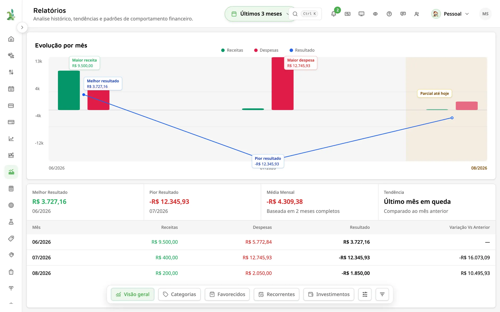
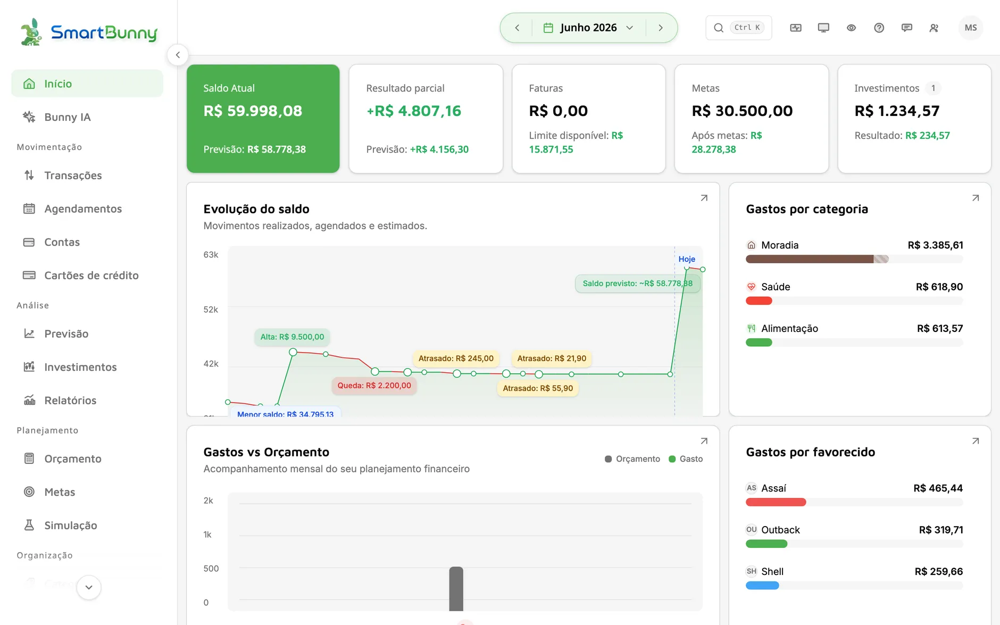
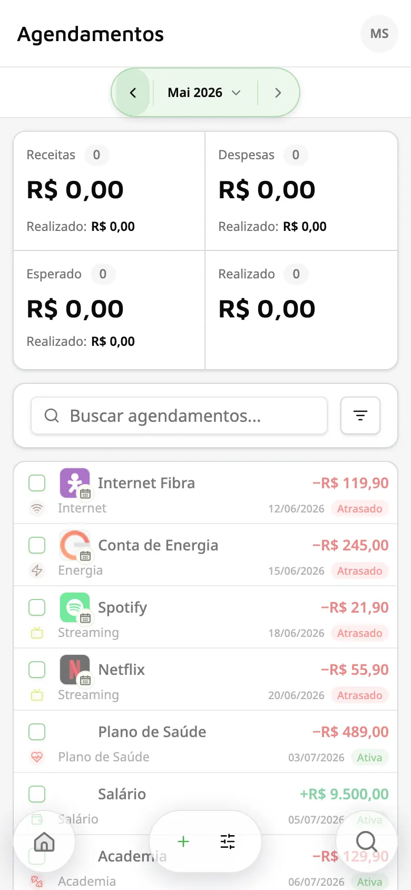
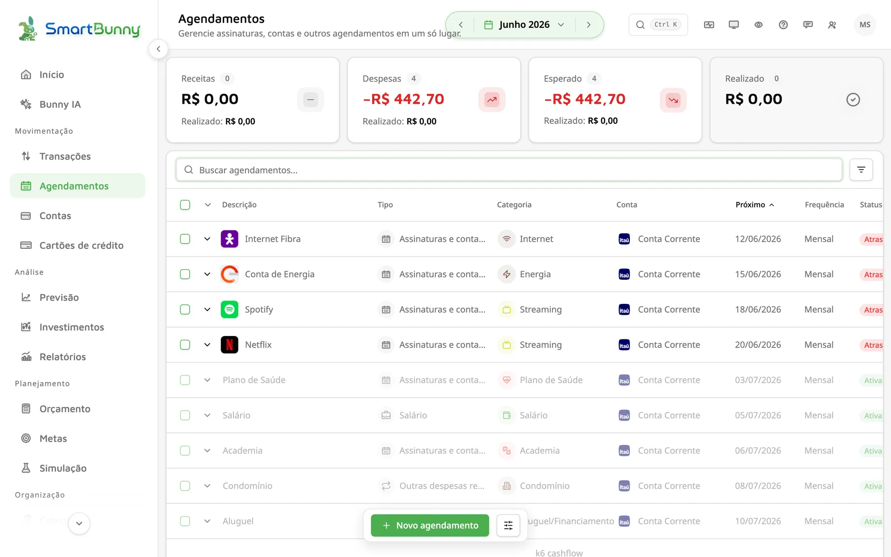
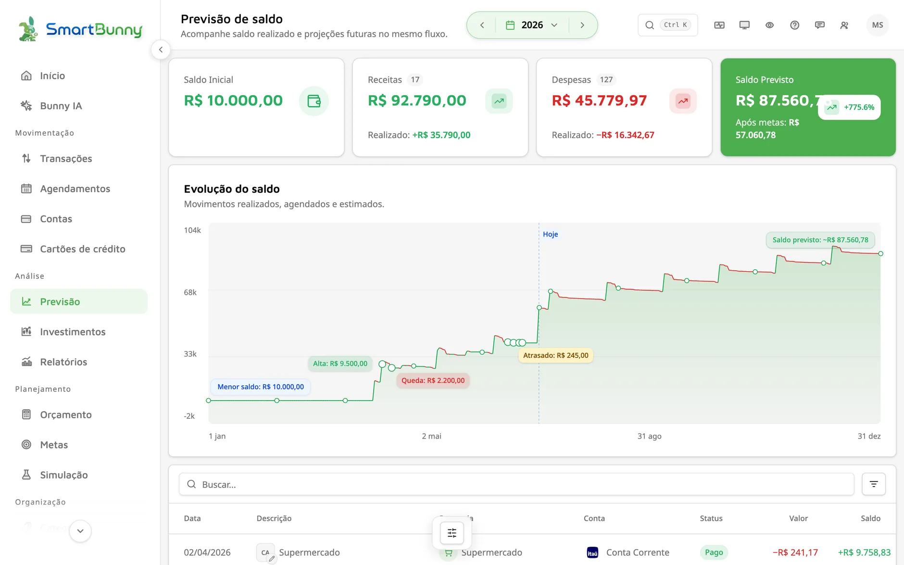
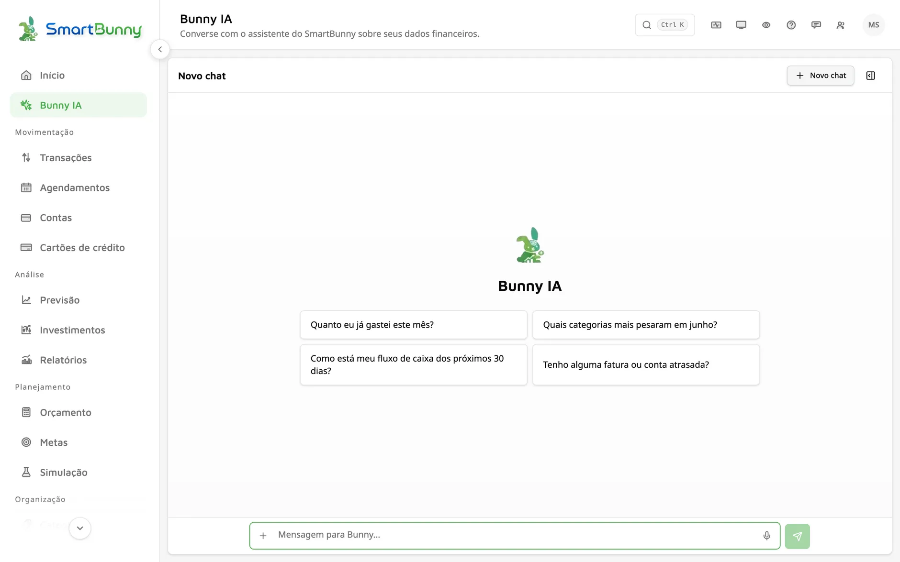
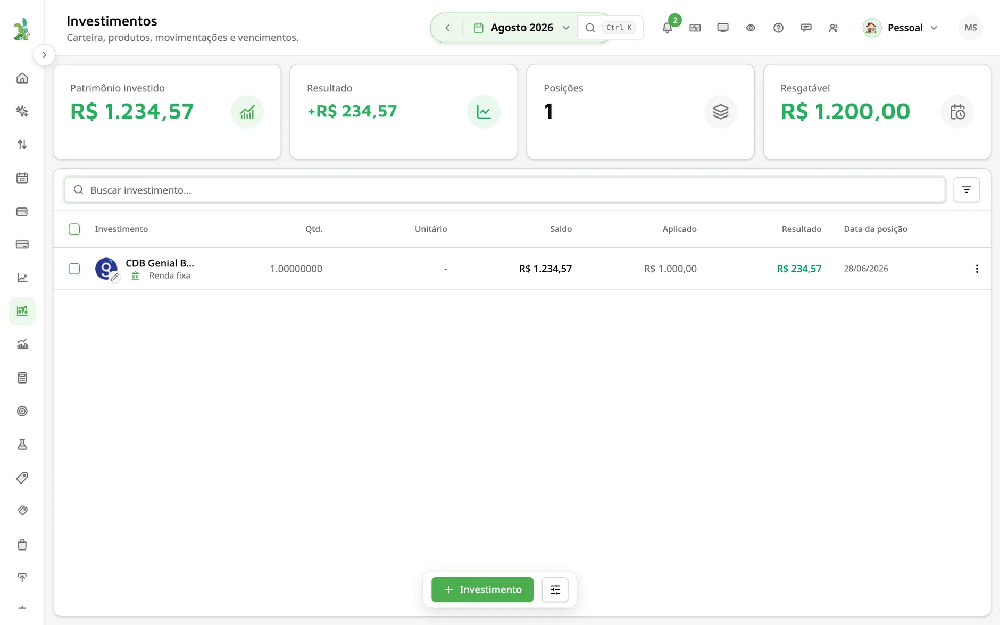
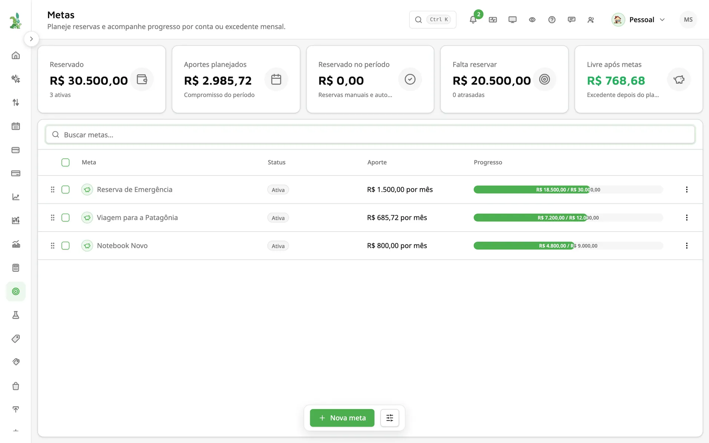
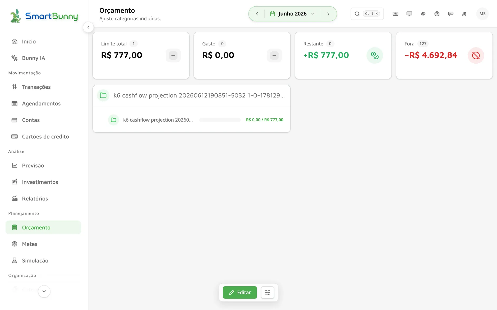

Relatórios e análises
Receitas, despesas e categorias mês a mês — compare períodos e entenda para onde seu dinheiro está indo.

Feito para o Brasil — seus extratos, cartões e contas em reais
O SmartBunny organiza seus lançamentos, importa extratos, controla contas recorrentes e projeta seu fluxo de caixa — você vê o futuro do seu dinheiro antes de ele acontecer.
Comece grátis.

Extratos, cartões e contas organizados em um só lugar
Recursos
Receitas, despesas e categorias mês a mês — compare períodos e entenda para onde seu dinheiro está indo.

Traga seus extratos em PDF, OFX, XLS ou CSV, revise os dados e confirme tudo antes de salvar.
PDF, OFX, XLS ou CSV: mapeie as colunas e revise tudo antes de confirmar a importação.
Defina uma regra uma vez e o SmartBunny categoriza, marca favorecidos e identifica transferências sozinho.
Limites mensais por categoria, com acompanhamento em tempo real do quanto ainda dá pra gastar.
Netflix, academia, condomínio: cadastre o que se repete e veja tudo projetado no seu fluxo de caixa.

Agendamentos
Cadastre assinaturas, contas, parcelamentos e até o salário — com recorrência mensal, semanal, anual ou um número fixo de parcelas.
Valor fixo ou estimado pelos últimos lançamentos. No vencimento, o agendamento vira transação e se concilia sozinho com o que cai na conta.
Cada agendamento alimenta automaticamente a sua previsão. É assim que o SmartBunny enxerga o futuro do seu saldo.

Fluxo de caixa
Sua previsão de saldo é construída a partir das transações reais, dos agendamentos e das faturas de cartão — projetada mês a mês, até três anos à frente.

Entre no modo simulação, mude o que quiser — salário, contas, metas — e veja o impacto no futuro. Ao sair, tudo volta ao normal. Seus dados reais ficam intactos.
Bunny IA
O Bunny IA é o assistente financeiro do SmartBunny. Pergunte em português e receba respostas sobre seus gastos, faturas e fluxo de caixa — ou peça para ele fazer qualquer coisa que você faria na mão.
Resumos de gastos, status de orçamentos, projeção de caixa, faturas de cartão, progresso das metas e busca de transações — é só perguntar.
Criar e editar lançamentos, categorias, tags, favorecidos, regras de automação e recorrências. Tudo o que você faria manualmente, ele faz a partir da conversa.
Peça "importe este extrato" e o Bunny IA conduz o passo a passo: inicia o rascunho, escolhe a conta, resolve duplicados, concilia e confirma — com voz ou anexo de arquivo.

Investimentos
Acompanhe seus investimentos de todas as instituições em uma só carteira — adicione manualmente ou conecte via Open Finance e veja o resultado real do seu dinheiro.
Renda fixa, ações, FIIs, fundos, previdência, cripto e mais — todos os seus produtos, de qualquer banco ou corretora, em um único painel.
Saldo líquido, valor aplicado e resultado (lucro ou prejuízo) calculados para você, além do quanto está resgatável a qualquer momento.
Registre compras, vendas, dividendos e juros, e acompanhe datas de vencimento com projeção de liquidez para a renda fixa.

Planejamento
Planeje contribuições mensais, reserve com um toque e saiba exatamente quando vai chegar lá.

Limites por categoria com progresso em tempo real — antes de estourar, você fica sabendo.

Segurança
Autenticação gerenciada pela AWS, tokens de curta duração e criptografia em trânsito e em repouso.
Seus dados financeiros entram por importação e revisão explícita. O SmartBunny nunca movimenta seu dinheiro.
Nada é apagado de verdade sem você saber: todo registro financeiro mantém histórico completo de alterações.
Crie sua conta e comece agora a organizar lançamentos, recorrências e previsões.
Comece grátis.